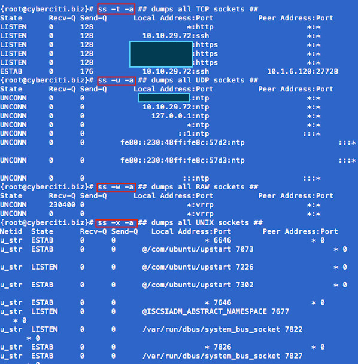

nixCraft
Linux Tips, Hacks, Tutorials, And Ideas In Blog Format
ss: Display Linux TCP / UDP Network and Socket Information
The ss command is used to show socket statistics. It can display stats for PACKET sockets, TCP sockets, UDP sockets, DCCP sockets, RAW sockets, Unix domain sockets, and more. It allows showing information similar to netstat command. It can display more TCP and state information than other tools. It is a new, incredibly useful and faster (as compare to netstat) tool for tracking TCP connections and sockets. SS can provide information about:
Most Linux distributions are shipped with ss and many monitoring tools. Being familiar with this tool helps enhance your understand of what’s going on in the system sockets and helps you find the possible causes of a performance problem.
Task: Display Sockets Summary
List currently established, closed, orphaned and waiting TCP sockets, enter:
# ss -s
Sample Output:
Total: 734 (kernel 904)
TCP: 1415 (estab 112, closed 1259, orphaned 11, synrecv 0, timewait 1258/0), ports 566
Transport Total IP IPv6
* 904 - -
RAW 0 0 0
UDP 15 12 3
TCP 156 134 22
INET 171 146 25
FRAG 0 0 0
Task: Display All Open Network Ports
# ss -l
Sample Output:
ss -l
Recv-Q Send-Q Local Address:Port Peer Address:Port
0 0 127.0.0.1:smux *:*
0 0 127.0.0.1:10024 *:*
0 0 127.0.0.1:10025 *:*
0 0 *:3306 *:*
0 0 *:http *:*
0 0 *:4949 *:*
0 0 *:domain *:*
0 0 *:ssh *:*
0 0 *:smtp *:*
0 0 127.0.0.1:rndc *:*
0 0 127.0.0.1:6010 *:*
0 0 *:https *:*
0 0 :::34571 :::*
0 0 :::34572 :::*
0 0 :::34573 :::*
0 0 ::1:rndc :::*
Type the following to see process named using open socket:
# ss -pl
Find out who is responsible for opening socket / port # 4949:
# ss -lp | grep 4949
Sample output:
0 0 *:4949 *:* users:(("munin-node",3772,5))
munin-node (PID # 3772) is responsible for opening port # 4949. You can get more information about this process (like memory used, users, current working directory and so on) visiting /proc/3772 directory:
# cd /proc/3772
# ls -l
Task: Display All TCP Sockets
# ss -t -a
Task: Display All UDP Sockets
# ss -u -a
Task: Display All RAW Sockets
# ss -w -a
Task: Display All UNIX Sockets
# ss -x -a
Sample outputs:

Fig.01: ss command in action
Task: Display All Established SMTP Connections
# ss -o state established '( dport = :smtp or sport = :smtp )'
Task: Display All Established HTTP Connections
# ss -o state established '( dport = :http or sport = :http )'
Task: Find All Local Processes Connected To X Server
# ss -x src /tmp/.X11-unix/*
Task: List All The Tcp Sockets in State FIN-WAIT-1
List all the TCP sockets in state -FIN-WAIT-1 for our httpd to network 202.54.1/24 and look at their timers:
# ss -o state fin-wait-1 '( sport = :http or sport = :https )' dst 202.54.1/24
How Do I Filter Sockets Using TCP States?
The syntax is as follows:
|
## tcp ipv4 ## ss -4 state FILTER-NAME-HERE
## tcp ipv6 ## ss -6 state FILTER-NAME-HERE |
Where FILTER-NAME-HERE can be any one of the following,
Examples
Type the following command to see closing sockets:
|
ss -4 state closing |
Recv-Q Send-Q Local Address:Port Peer Address:Port
1 11094 75.126.153.214:http 175.44.24.85:4669
How Do I Matches Remote Address And Port Numbers?
Use the following syntax:
|
ss dst ADDRESS_PATTERN
## Show all ports connected from remote 192.168.1.5## ss dst 192.168.1.5
## show all ports connected from remote 192.168.1.5:http port## ss dst 192.168.1.5:http ss dst 192.168.1.5:smtp ss dst 192.168.1.5:443 |
Find out connection made by remote 123.1.2.100:http to our local virtual servers:
# ss dst 123.1.2.100:http
Sample outputs:
State Recv-Q Send-Q Local Address:Port Peer Address:Port
ESTAB 0 0 75.126.153.206:http 123.1.2.100:35710
ESTAB 0 0 75.126.153.206:http 123.1.2.100:35758
How Do I Matches Local Address And Port Numbers?
|
ss src ADDRESS_PATTERN ### find out all ips connected to nixcraft.com ip address 75.126.153.214 ### ## Show all ports connected to local 75.126.153.214## ss src 75.126.153.214
## http (80) port only ## ss src 75.126.153.214:http ss src 75.126.153.214:80
## smtp (25) port only ## ss src 75.126.153.214:smtp ss src 75.126.153.214:25 |
How Do I Compare Local and/or Remote Port To A Number?
Use the following syntax:
|
## Compares remote port to a number ## ss dport OP PORT
## Compares local port to a number ## sport OP PORT |
Where OP can be one of the following:
Examples
|
################################################################################### ### Do not forget to escape special characters when typing them in command line ### ###################################################################################
ss sport = :http ss dport = :http ss dport \> :1024 ss sport \> :1024 ss sport \< :32000 ss sport eq :22 ss dport != :22 ss state connected sport = :http ss \( sport = :http or sport = :https \) ss -o state fin-wait-1 \( sport = :http or sport = :https \) dst 192.168.1/24 |
ss command options summery
|
Usage: ss [ OPTIONS ] ss [ OPTIONS ] [ FILTER ] -h, --help this message -V, --version output version information -n, --numeric don't resolve service names -r, --resolve resolve host names -a, --all display all sockets -l, --listening display listening sockets -o, --options show timer information -e, --extended show detailed socket information -m, --memory show socket memory usage -p, --processes show process using socket -i, --info show internal TCP information -s, --summary show socket usage summary
-4, --ipv4 display only IP version 4 sockets -6, --ipv6 display only IP version 6 sockets -0, --packet display PACKET sockets -t, --tcp display only TCP sockets -u, --udp display only UDP sockets -d, --dccp display only DCCP sockets -w, --raw display only RAW sockets -x, --unix display only Unix domain sockets -f, --family=FAMILY display sockets of type FAMILY
-A, --query=QUERY, --socket=QUERY QUERY := {all|inet|tcp|udp|raw|unix|packet|netlink}[,QUERY]
-D, --diag=FILE Dump raw information about TCP sockets to FILE -F, --filter=FILE read filter information from FILE FILTER := [ state TCP-STATE ] [ EXPRESSION ] |
ss vs netstat command speed
Use the time command to run both programs and summarize system resource usage. Type the netstat command as follows:
# time netstat -at
Sample outputs:
real 2m52.254s
user 0m0.178s
sys 0m0.170s
Now, try the ss command:
# time ss -atr
Sample outputs:
real 2m11.102s
user 0m0.124s
sys 0m0.068s
Note: Both outputs are taken from reverse proxy acceleration server running on RHEL 6.x amd64.
Recommended readings:
{ 12 comments… add one }
Why haven’t I heard of the ‘ss’ command before? This is great – I’ve tested the commands on several servers and this will be an excellent addition to the tools I’ve already been using. Thanks for bringing this command to the light of day for me! :)
astonishing. years of unix administration and never stumbled across this goodie?
OK, where the HECK is this thing?
I can’t find source, webpage, RPM, etc. Having a link within the article is appropriate.
It is part of iproute package.
The source code can be obtained from:
http://devresources.linux-foundation.org/dev/iproute2/download/
ss -4nlp
cheers !
Yummy, thanks for sharing! And ss is included in CentOS 5.2.
Best,
Aleksey
Thanks for sharing this great tool. I’m loving it.
Good job and it is really helped me a lot
I really appreciate you guys for sharing your knowledge of linux commands for admin type of commands that come in handy for checking out your network and activity, and open tools for open ports.once again thanks.
These are some great tools. Thanks for keeping up posting the stuff I need to get things done.
In the last speed tests you should add -n so DNS resolving doesn’t slow down the commands. In my testing ss was at least 10 times faster than netstat.
Your “time” commands are unfair. Almost all of the time consumed by netstat, is consumed by doing reverse DNS lookups on every IP returned.
If you run the netstat command first, it will prime your DNS cache, and then the subsequent command will run faster (whether that be netstat, or ss).
I suggest you try the test again using “time netstat -nat”. Adding the “n” will stop the reverse DNS lookups, and the response should be nearly instantaneous. Waiting two minutes for a netstat response would drive me nuts.
©2000-2016 nixCraft. All rights reserved. Privacy - Terms of Service - Questions or Comments